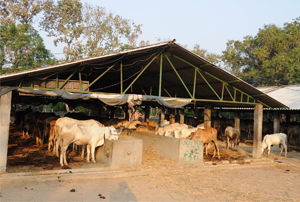
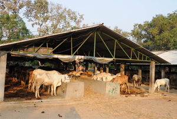

Palakadli Gosala
A full fledged Cow Farm or Gosala is being run by PSS at Pedakondepudi village in the
Seethanagaram Mandal. The Gosala at present houses 300 cows which are expected to increase
substantially in numbers. The cow dung is used in preparing Jeevam and Jeevamrutham herbicides.
The milk yeild is at present being used for the requirements of the Ashram at Seethanagaram.
 
